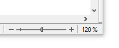

5. Copiar y pegar¶
En este ejercicio vamos a aprender a copiar y pegar texto e imágenes en Writer.
Abrimos un nuevo documento de texto en Writer.
Ahora vamos a cambiar el factor de escala de la ventana para poder ver mejor el texto según lo escribimos.
En la parte inferior derecha de la ventana, cambiaremos el factor de escala a 120% pulsando el botón - o el botón +.

- Buscamos información en Wikipedia sobre algún inventor, por ejemplo, Nikola Tesla.

Seleccionamos el primer párrafo de texto de Wikipedia y lo copiamos manteniendo pulsada la tecla control
 y pulsando a continuación la tecla C
y pulsando a continuación la tecla C  .
.Otra forma de copiar es seleccionar el texto, pinchar con el botón derecho del ratón y seleccionar copiar.
Una vez copiado el texto, volvemos a Writer y pegamos el texto manteniendo pulsada la tecla control
y pulsando la tecla V .Otra forma de pegar el texto es pinchar con el botón derecho del ratón y seleccionar pegar.
Una vez pegado, veremos que el texto aparece con enlaces a otras páginas web. Los enlaces se verán en color azul subrayado.

Para que no aparezcan los enlaces es necesario pegar el texto sin formato.
Primero vamos a deshacer el pegado anterior con el botón deshacer
 o con la combinación de
teclas control y Z
o con la combinación de
teclas control y Z  .
.Ahora seleccionamos en el menú
Editar... Pegado especial... Pegar texto sin formato.
También podemos pinchar con el botón derecho del ratón y seleccionar
Pegado especial... Texto sin formatoEl aspecto del texto será el siguiente.

Por último vamos a copiar la imagen de Tesla de la Wikipedia.
Primero pinchamos con el botón derecho del ratón sobre la imagen y seleccionamos
Copiar imagenA continuación pinchamos en el comienzo del texto en Writer y pegamos la imagen con el botón derecho del ratón o pulsando la combinación de teclas control
más la tecla V .El resultado será el siguiente.
Créditos¶
El texto utilizado en este ejercicio está basado, con cambios, en el artículo de Wikipedia sobre Nikola Tesla, bajo licencia CC BY-SA 3.0, via Wikimedia Commons
La imagen utilizada es de Napoleon Sarony, con licencia de dominio público, via Wikimedia Commons